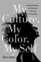

|
Imagined Liberation
Xenophobia, Citizenship, and Identity in South Africa, Germany, and Canada
Adam, Heribert and Kogila Moodley
246 pp • 6x9 • Spring 2015
paper 978-1-4399-1190-7
cloth 978-1-4399-1189-1
|
 |
Ethnic
Pride, American Patriotism
Slovaks and Other New Immigrants in the Interwar Era
Alexander, June Granatir 296 pp • 6x9
• Spring 2004
paper 978-1-59213-252-2
cloth 978-1-59213-251-5
|

|
American Culture and Religious Diversity
A Saudi Perspective
Alhomoudi, Fahad
176 pp • 6x9 • Fall 2011
paper 978-0-931214-13-4 |
 |
Black
Power, White Blood
The Life and Times of Johnny Spain
Andrews, Lori 352 pp • 5.5x8.25 •
Fall 1999
paper 978-1-56639-750-6
|
|
Race and Class Matters at an Elite College
Aries, Elizabeth
246 pp • 6x9 • Fall 2008
paper 978-1-59213-726-8
cloth 978-1-59213-725-1
|
 |
Speaking of Race and Class
The Student Experience at an Elite College
Aries, Elizabeth, with Richard Berman 238 pp • 6x9 • Fall
2012
paper 978-1-4399-0967-6
cloth 978-1-4399-0966-9
|
 |
Family
and Gender Among American Muslims
Issues Facing Middle Eastern Immigrants And Their Decendants
edited by Aswad, Barbara C. and Barbara Bilg� 344
pp • 6x9 • Spring 1996
paper 978-1-56639-443-7
cloth 978-1-56639-442-0
|
|
Between
the Lines
South Asians and Postcoloniality
edited by Bahri, Deepika and Mary Vasudeva 384
pp • 6x9 • Fall 1996
paper 978-1-56639-468-0
cloth 978-1-56639-467-3
|
 |
Understanding
Mainland Puerto Rican Poverty
Baker, Susan S. 256 pp • 6x9 • Fall
2002
paper 978-1-56639-970-8
cloth 978-1-56639-969-2
|
|
Creating a Buddhist Community
A Thai Temple in Silicon Valley
Bao, Jiemin
204 pp • 5.5x8.25 • Spring 2015
paper 978-1-4399-0955-3
cloth 978-1-4399-0954-6 |
 |
Taking
It Personally
Racism in the Classroom from Kindergarten to College
Berlak, Ann and Sekani Moyenda 216 pp •
6x9 • Spring 2001
paper 978-1-56639-876-3
cloth 978-1-56639-875-6
|
 |
Still
the Big News
Racial Oppression in America
Blauner, Bob 288 pp • 6x9 • Spring
2001
paper 978-1-56639-874-9
cloth 978-1-56639-873-2
|
|
Locating
Filipino Americans
Ethnicity and the Cultural Politics of Space
Bonus, Rick 248 pp • 6x9 • Spring
2000
paper 978-1-56639-779-7
cloth 978-1-56639-778-0
|
|
Reframing Transracial Adoption
Korean Adoptees, White Parents and the Politics of Kinship
Brian, Kristi
230 pp • 6x9 • Spring 2012
paper 978-1-4399-0184-7
cloth 978-1-4399-0183-0
|
 |
Walking in Cities
Quotidian Mobility as Urban Theory, Method, and Practice
edited by Brown, Evrick and Timothy Shortell
292 pp • 6x9 • Fall 2015
paper 978-1-4399-1221-8
cloth 978-1-4399-1220-1 |
 |
The End of White World Supremacy
Black Internationalism and the Problem of the Color Line
Bush, Roderick
264 pp • 6x9 • Spring 2009
paper 978-1-59213-573-8
cloth 978-1-59213-572-1
|
 |
Savage Portrayals
Race, Media, and the Central Park Jogger Story
Byfield, Natalie
P.
242 pp • 6x9 • Fall 2013
paper 978-1-4399-0634-7
cloth 978-1-4399-0633-0 |

|
Economies of Desire
Sex and Tourism in Cuba and the Dominican Republic
Cabezas, Amalia L.
232 pp • 5.5x8.25 • Spring 2009
paper 978-1-59213-750-3
cloth 978-1-59213-749-7
|
 |
Readings
in American Indian Law
Recalling the Rhythm of Survival
edited by Carrillo, Jo 353 pp • 7x10
• Fall 1997
paper 978-1-56639-582-3
cloth 978-1-56639-581-6
|

|
Hapa Girl
A Memoir
Chai, May-lee
232 pp • 5.5x8.25 • Spring 2007
paper 978-1-59213-616-2
cloth 978-1-59213-615-5
|
 |
Mayors
and Schools
Minority Voices and Democratic Tensions in Urban Education
Chambers, Stefanie 240 pp • 5.5x8.25
• Spring 2006
paper 978-1-59213-469-4
cloth 978-1-59213-468-7
|
 |
The Politics of New Immigrant Destinations
Transatlantic Perspectives
edited by Chambers, Stefanie, Diana Evans, Anthony M. Messina, and Abigail Fisher Williamson
348 pp • 6x9 • Spring 2017
paper 978-1-4399-1463-2
cloth 978-1-4399-1462-5
|
 |
Chinese Americans and the Politics of Race and Culture
edited
by Chan, Sucheng and Madeline Y. Hsu 288 pp • 6x9 • Spring 2008
paper 978-1-59213-753-4
cloth 978-1-59213-752-7
|
 |
The
Vietnamese American 1.5 Generation
Stories of War, Revolution, Flight, and New Beginnings
edited by Chan, Sucheng 344 pp • 6x9
• Spring 2006
paper 978-1-59213-501-1
cloth 978-1-59213-500-4
|
 |
Searching
for Safe Spaces
Afro-Caribbean Women Writers in Exile
Chancy, Myriam J. A. 272 pp • 6x9 •
Fall 1997
paper 978-1-56639-540-3
cloth 978-1-56639-539-7
|
 |
The
Irish in Philadelphia
Ten Generations of Urban Experience
Clark, Dennis 264 pp • Spring 1982
paper 978-0-87722-227-9
cloth 978-0-87722-057-2
|

|
Multiethnic
Moments
The Politics of Urban Education Reform
Clarke, Susan E., Rodney E. Hero, Mara S. Sidney, Luis Fraga
and Bari Anhalt Erlichson, foreword by Clarence N. Stone
264 pp • 6x9 • Fall 2006
paper 978-1-59213-537-0
cloth 978-1-59213-536-3
|
 |
Legacy and Legitimacy
Black Americans and the Supreme Court
Clawson, Rosalee A. and Eric N. Waltenburg
232 pp • 5.5x8.25 • Fall 2008
paper 978-1-59213-903-3
cloth 978-1-59213-902-6
|
|
Ball Don't Lie!
Myth, Genealogy, and Invention in the Cultures of Basketball
Colás, Yago
228 pp • 6x9 • Spring 2016
paper 978-1-4399-1243-0
cloth 978-1-4399-1242-3
|
|
Violent Belongings
Partition, Gender, and National Culture in Postcolonial India
Daiya, Kavita 274 pp • 6x9 • Spring 2008
paper 978-1-59213-743-5
cloth 978-1-59213-743-5
|

|
Saving San Francisco
Relief and Recovery after the 1906 Disaster
Davies, Andrea Rees
232 pp • 6x9 • Fall 2011
paper 978-1-4399-0433-6
cloth 978-1-4399-0432-9
|
 |
Critical Race Theory
The Cutting Edge
Third Edition
edited
by Delgado, Richard and Jean Stefancic
856 pp • 7x10 • Spring 2013
paper 978-1-4399-1061-0
cloth 978-1-4399-1060-3 |

|
"I Hear America Singing"
Folk Music and National Identity
Donaldson, Rachel Clare
234 pp • 6x9 • Fall 2014
paper 978-1-43991-079-5
cloth 978-1-43991-078-8 |
 |
Becoming
American, Becoming Ethnic
College Students Explore Their Roots
edited by Dublin, Thomas 256 pp • 6x9
• Spring 1996
paper 978-1-56639-439-0
cloth 978-1-56639-438-3
|
 |
Baltimore '68
Riots and Rebirth in an American City
edited by Elfenbein, Jessica I., Thomas L. Hollowak, and Elizabeth M. Nix
294 pp • 6x9 • Spring 2011
paper 978-1-4399-0662-0
cloth 978-1-4399-0661-3
|
 |
Troubled
Pasts
News and the Collective Memory of Social Unrest
Edy, Jill A. 240 pp • 5.5x8.25 •
Spring 2006
paper 978- 1-59213-497-7
cloth 978- 1-59213-496-0
|
|
Youth Violence
Sex and Race Differences in Offending, Victimization, and Gang Membership
Esbensen, Finn-Aage, Dana Peterson, Terrance J. Taylor and Adrienne Freng
244 pp • 6x9 • Fall 2010
paper 978-1-4399-0072-7
cloth 978-1-4399-0071-0
|
 |
Filipino
American Lives
Espiritu, Yen Le 240 pp • 6x9 •
Spring 1995
paper 978-1-56639-317-1
cloth 978-1-56639-316-4
|

|
Long Distance Love
A Passion for Football
Farred, Grant
224 pp • 5.5x8.25 • Fall 2007
paper 978-1-59213-374-1
cloth 978-1-59213-373-4
|
 |
Resurrecting Slavery
Racial Legacies and White Supremacy in France
Fleming, Crystal Marie
286 pp • 6x9 • Fall 2016
paper 978-1-4399-1409-0
cloth 978-1-4399-1408-3 |

|
Latino Lives in America
Making It Home
Fraga, Luis R., John A. Garcia, Rodney E. Hero, Michael Jones-Correa, Valerie Martinez-Ebers, and Gary Segura
224 pp • 5.5x8.25 • Spring 2010
paper 978-1-43990-049-9
cloth 978-1-43990-048-2
|
 |
Constructing Muslims in France
Discourse, Public Identity, and the Politics of Citizenship
Fredette, Jennifer
222 pp • 6x9 • Fall 2013
paper 978-1-4399-1029-0
cloth 978-1-4399-1028-3 |
|
There
Goes the 'Hood
Views of Gentrification from the Ground Up
Freeman, Lance 248 pp • 6x9 •
Spring 2006
paper 978- 1-59213-437-3
cloth 978- 1-59213-436-6
|
 |
Washington,
D.C.
Inner-City Revitalization and Minority Suburbanization
Gale, Dennis E. 259 pp • Fall 1987
paper 978-0-87722-777-9
cloth 978-0-87722-496-9 |
 |
Issei,
Nisei, War Bride
Three Generations of Japanese American Women in Domestic Service
Glenn, Evelyn Nakano 290 pp • 5.5x8.25
• Spring 1986
paper 978-0-87722-564-5
cloth 978-0-87722-412-9 |

|
Separate Societies
Poverty and Inequality in U.S. Cities
Second Edition
Goldsmith, William W. and Edward J. Blakely
268 pp • 6x9 • Spring 2010
paper 978-1-43990-292-9
cloth 978-1-43990-291-2
|
 |
Reshaping
Ethnic and Racial Relations in Philadelphia
Immigrants in a Divided City
Goode, Judith and Jo Anne Schneider 296 pp
• 6x9 • Spring 1994
paper 978-1-56639-141-2
cloth 978-1-56639-140-5
|
 |
Twenty-First Century Color Lines
Multiracial Change in Contemporary America
edited by Grant-Thomas, Andrew, and Gary Orfield, foreword by Christopher Edley, Jr.
328 pp • 6x9• Fall 2008
paper 978-1-59213-692-6
cloth 978-1-59213-691-9 |
 |
Working
Poor
Farmworkers in the United States
Griffith, David and Ed Kissam with Jeromino Camposeco, Anna Garc�a,
Max Pfeffer, David Runsten, and Manuel Valdes Pizzini 368
pp • 6x9 • Fall 1994
paper 978-1-56639-239-6
cloth 978-1-56639-238-9 |
 |
Countervisions
Asian American Film Criticism
edited by Hamamoto, Darrell Y. and Sandra Liu 317
pp • 7x10 • Spring 2000
paper 978-1-56639-776-6
cloth 978-1-56639-775-9 |

|
The Hip Hop Underground
The Integrity and Ethics of Racial Identification
Harrison, Anthony Kwame
226 pp • 6x9 • Fall 2009
paper 978-1-4399-0061-1
cloth 978-1-4399-0060-4
|
 |
Black
Theatre
Ritual Performance in the African Diaspora
edited by Harrison, Paul Carter, Victor Leo Walker II and Gus Edwards
432 pp • 7x10 • Spring 2002
paper 978-1-56639-944-9
cloth 978-1-56639-943-2
|
 |
African-American
Reflections on Brazil's Racial Paradise
edited by Hellwig, David J. 276 pp •
5.5x8.25 • Spring 1992
cloth 978-0-87722-892-9 |
|
Defining
America Through Immigration Policy
Hing, Bill Ong, foreword by Anthony D. Romero, Esq. 336
pp • 7x10 • Fall 2003
paper 978-1-59213-233-1
cloth 978-1-59213-232-4
|
 |
Bridge
of Light
Yiddish Film between Two Worlds
Hoberman, J. 416 pp • 8x9.25 • Fall
1995
paper 978-1-56639-404-8
|
 |
The
Politics of Diversity
Immigration, Resistance, and Change in Monterey Park, California
Horton, John 296 pp • 6x9 • Fall
1995
paper 978-1-56639-328-7
cloth 978-1-56639-327-0
|

|
We Shall Be Free!
Black Communist Protests in Seven Voices
Howard, Walter T.
220 pp • 5.5x8.25 • Spring 2013
cloth 978-1-4399-0859-4 |
 |
The White Savior Film
Content, Critics, and Consumption
Hughey, Matthew W.
230 pp • 6x9 • Spring 2014
paper 978-1-4399-1001-6
cloth 978-1-4399-1000-9 |
 |
How to Be South Asian in America
Narratives of Ambivalence and Belonging
jain, anupama
288 pp • 6x9 • Spring 2011
paper 978-1-4399-0303-2
cloth 978-1-4399-0302-5
|
|  |
My Culture, My Color, My Self
Heritage, Resilience, and Community in the Lives of Young Adults
Jenkins, Toby S.
204 pp • 6x9 • Spring 2013
paper 978-1-4399-0830-3
cloth 978-1-4399-0829-7 |
|
The
Forest and the Trees
Sociology as Life, Practice, and Promise
Third Edition
Johnson,
Allan G.
198 pp • 6x9 • Fall 2014
paper 978-1-43991-187-7
cloth 978-1-43991-186-0 |

|
Not from Here
A Memoir
Johnson, Allan G.
186 pp • 5.5x8.25 • Spring 2015
cloth 978-1-4399-1245-4 |

|
Objectifying Measures
The Dominance of High-Stakes Testing and the Politics of Schooling
Johnson, Amanda Walker
222 pp • 5.5x8.25 • Spring 2009
paper 978-1-59213-906-4
cloth 978-1-59213-905-7
|
 |
The
"Huddled Masses" Myth
Immigration and Civil Rights
Johnson, Kevin R. 264 pp • 6x9 •
Fall 2003
paper 978-1-59213-206-5
cloth 978-1-59213-205-8
|
 |
Accent
on Privilege
English Identities and Anglophilia in the U.S.
Jones, Katharine W. 304 pp • 6x9 •
Fall 2001
paper 978-1-56639-901-2
cloth 978-1-56639-900-5
|
 |
Sonic Spaces of the Karoo
The Sacred Music of a South African Coloured Community
Jorritsma, Marie 224 pp • 6x9 • Spring 2011
cloth 978-1-4399-0237-0 |
 |
Intimacy across Borders
Race, Religion, and Migration in the U.S. Midwest
Juffer, Jane
204 pp • 5.5x8.25 • Spring 2013
paper 978-1-4399-1053-5
cloth 978-1-4399-1052-8
|
 |
"We Live in the Shadow"
Inner-City Kids Tell Their Stories through Photographs
Kaplan, Elaine Bell
208 pp • 6x9 • Spring 2013
paper 978-1-43990-790-0
cloth 978-1-43990-789-4
|

|
Another
Arabesque
Syrian-Lebanese Ethnicity in Neoliberal Brazil
Karam, John Tofik
232 pp • 6x9 • Fall 2006
paper 978-1-59213-540-0
cloth 978-1-59213-539-4
|
 |
The
Suburban Racial Dilemma
Housing and Neighborhoods
Keating, W. Dennis 288 pp • 6x9 •
Spring 1994
paper 978-1-56639-148-1
cloth 978-1-56639-147-4
|

|
The
Racial Logic of Politics
Asian Americans and Party Competition
Kim, Thomas P.
208 pp • 6x9 • Fall 2006
paper 978-1-59213-549-3
cloth 978-1-59213-548-6
|
 |
Achieving
Against the Odds
How Academics Become Teachers of Diverse Students
edited by Kingston-Mann, Esther and Tim Sieber 240
pp • 6x9 • Spring 2001
paper 978-1-56639-851-0
cloth 978-1-56639-850-3
|
 |
Jews
Against Zionism
The American Council for Judaism, 1942-1948
Kolsky, Thomas A. 288 pp • 6x9 •
Fall 1990
paper 978-1-56639-009-5
cloth 978-0-87722-694-9 |
|
Life's
America
Family and Nation in Postwar Photojournalism
Kozol, Wendy 232 pp • 8.5x11 • Spring
1994
paper 978-1-56639-221-1
cloth 978-1-56639-152-8 |
 |
La
Merica
Images of Italian Greenhorn Experience
La Sorte, Michael A. 224 pp • 5.5x8.25
• Spring 1985
paper 978-1-59213-234-8
cloth 978-0-87722-382-5
|
 |
Newcomers
in Workplace
Immigrants and the Restructing of the U.S. Economy
edited by Lamphere, Louise, Alex Stepick and Guillermo Grenier
320 pp • 6x9 • Fall 1993
paper 978-1-56639-131-3
cloth 978-1-56639-124-5 |
|
Orientals
Asian Americans in Popular Culture
Lee, Robert G. 288 pp • 6x9 • Fall
1998
paper 978-1-56639-753-7
cloth 978-1-56639-658-5
|
 |
Making
Ethnic Choices
California's Punjabi Mexican Americans
Leonard, Karen Isaksen 352 pp • 6x9 •
Spring 1992
paper 978-1-56639-202-0
cloth 978-0-87722-890-5
|
 |
The
Making of Asian America through Political Participation
Lien, Pei-te 312 pp • 6x9 • Fall
2001
paper 978-1-56639-895-4
cloth 978-1-56639-894-7
|
 |
How Racism Takes Place
Lipsitz, George
320 pp • 6x9 • Spring 2011
paper 978-1-4399-0256-1
cloth 978-1-4399-0255-4
|
 |
The
Possessive Investment in Whiteness
How White People Profit from Identity Politics
Lipsitz, George Revised
and Expanded Edition
312 pp • 6x9 • Spring 2006
paper 978- 1-59213-494-6
cloth 978- 1-59213-493-9
|
|
The
Maya Diaspora
Guatemalan Roots, New American Lives
edited by Loucky, James and Marilyn M. Moors 248
pp • 6x9 • Fall 2000
paper 978-1-56639-795-7
cloth 978-1-56639-794-0
|
 |
Just Who Loses?
Discrimination in the United States, Volume 2
Lucas, Samuel Roundfield
370 pp • 6x9 • Fall 2012
cloth 978-1-4399-0850-1 |
 |
Theorizing Discrimination in an Era of Contested Prejudice
Discrimination in the United States, Volume 1
Lucas, Samuel Roundfield
296 pp • 6x9• Fall 2008
paper 978-1-59213-913-2
cloth 978-1-59213-912-5
|
 |
Desis
in the House
Indian American Youth Culture in New York City
Maira, Sunaina Marr 256 pp • 6x9 •
Fall 2001
paper 978-1-56639-927-2
cloth 978-1-56639-926-5
|
 |
Beyond
Segregation
Multiracial and Multiethnic Neighborhoods in the United States
Maly, Michael T. 288 pp • 6x9 •
Fall 2004
paper 978-1-59213-135-8
cloth 978-1-59213-134-1
|
|
Vanishing Eden
White Construction of Memory, Meaning, and Identity in a Racially Changing City
Maly, Michael T. and Heather M. Dalmage
198 pp • 6x9 • Fall 2015
paper 978-1-4399-1119-8
cloth 978-1-4399-1118-1 |
 |
Cultural
Compass
Ethnographic Explorations of Asian America
edited by Manalansan, IV, Martin F. 272 pp
• 7x10 • Spring 2000
paper 978-1-56639-773-5
cloth 978-1-56639-772-8
|
 |
From
Tian'anmen to Times Square
Transnational China and the Chinese Diaspora on Global Screens,
1989-1997
Marchetti, Gina 320 pp • 6x9 • Fall
2005
paper 978-1-59213-278-2
cloth 978-1-59213-277-5 |

|
The Machinery of Whiteness
Studies in the Structure of Racialization
Martinot, Steve
232 pp • 6x9 • Spring 2010
paper 978-1-43990-052-9
cloth 978-1-43990-051-2
|
 |
Race Appeal
How Candidates Invoke Race in U.S. Political Campaigns
McIlwain, Charlton D. and Stephen M. Caliendo
272 pp • 6x9 • Spring 2011
paper 978-1-4399-0276-9
cloth 978-1-4399-0275-2
|
 |
An
Indian in White America
Monroe, Mark, edited by Carolyn Reyer, afterword by Kenneth Lincoln
256 pp • 6x9 • Fall 1994
paper 978-1-56639-235-8
cloth 978-1-56639-234-1 |
 |
Homeboys
Gangs, Drugs, and the Prison in the Barrios of Los Angeles
Moore, Joan W. 240 pp • Spring 1980
paper 978-0-87722-114-2
cloth 978-0-87722-121-0
|
 |
White
Boy
A Memoir
Naison, Mark D. 240 pp • 6x9 • Spring
2002
paper 978-1-56639-942-5
cloth 978-1-56639-941-8
|

|
The
Sorcery of Color
Identity, Race, and Gender in Brazil
Nascimento, Elisa Larkin
336 pp • 6x9 • Fall 2006
paper 978-1-59213-351-2
cloth 978-1-59213-350-5
|
 |
Immigrants,
Unions, and the New U.S. Labor Market
Ness, Immanuel 240 pp • 5.5x8.25 •
Spring 2005
paper 978-1-59213-041-2
cloth 978-1-59213-040-5
|
 |
No
Sword to Bury
Japanese Americans in Hawai'i during World War II
Odo, Franklin S. 336 pp • 6x9 •
Fall 2003
paper 978-1-59213-270-6
cloth 978-1-59213-207-2
|
 |
Ethnicity and Inequality in Hawai�i
Okamura, Jonathan Y.
256 pp • 6x9 • Spring 2008
paper 978-1-59213-756-5
cloth 978-1-59213-755-8
|
 |
Jobs
and Economic Development in Minority Communities
edited by Ong, Paul, and Anastasia Loukaitou-Sideris 320
pp • 6x9 • Spring 2006
paper 978-1-59213-410-6
cloth 978-1-59213-409-0
|
 |
Shifting
Borders
Rhetoric, Immigration, and California's Proposition 187
Ono, Kent A. and John M. Sloop 264 pp •
6x9 • Fall 2001
paper 978-1-56639-917-3
cloth 978-1-56639-916-6
|
 |
Incidental Racialization
Performative Assimilation in Law School
Pan, Yung-Yi Diana
220 pp • 6x9 • Spring 2017
paper 978-1-4399-1385-7
cloth 978-1-4399-1384-0
|
 |
Illegal Migrations and the Huckleberry Finn Problem
Park, John S.W.
278 pp • 6x9 • Spring 2013
paper 978-1-4399-1047-4
cloth 978-1-4399-1046-7
|

|
Behind the Backlash
Muslim Americans After 9/11
Peek, Lori
230 pp • 6x9 • Fall 2010
paper 978-1-59213-983-5
cloth 978-1-59213-982-8
|
 |
New
Jack Jocks
Rebels, Race, and the American Athlete
Platt, Larry 208 pp • 5.5x8.25 •
Spring 2002
paper 978-1-59213-191-4
cloth 978-1-56639-954-8
|
 |
Rites
of Assent
Two Novellas
Qasim, Abd al-Hakim, translated by Peter Theroux, introduction by
Samia Mehrez 192 pp • 5.5x8.25 •
Spring 1995
paper 978-1-56639-354-6
cloth 978-1-56639-353-9
|
 |
Discrepant
Histories
Translocal Essays on Filipino Cultures
edited by Rafael, Vicente L. 360 pp •
6x9 • Spring 1995
paper 978-1-56639-356-0
cloth 978-1-56639-355-3 |

|
Selling Transracial Adoption
Families, Markets, and the Color Line
Raleigh, Elizabeth
274 pp • 6x9 • Fall 2017
paper 978-1-4399-1478-6
cloth 978-1-4399-1477-9
|
 |
The
Migrant's Table
Meals and Memories in Bengali-American Households
Ray, Krishnendu 256 pp • 6x9 • Fall
2004
paper 978-1-59213-096-2
cloth 978-1-59213-095-5
|

|
African
American Perspectives on Political Science
Rich, Wilber C., foreword by Charles V. Hamilton
456 pp • 6x9 • Fall 2006
paper 978-1-59213-109-9
cloth 978-1-59213-108-2
|
|
Fire on the Prairie
Harold Washington, Chicago Politics, and the Roots of the Obama Presidency
Rivlin, Gary
312 pp • 6x9 • Fall 2012
paper 978-1-4399-0492-3
cloth 978-1-4399-0491-6
|
|
A City within a City
The Black Freedom Struggle in Grand Rapids, Michigan
Robinson, Todd E.
236 pp • 6x9 • Fall 2012
paper 978-1-4399-0922-5
cloth 978-1-4399-0921-8 |
 |
Love's
Revolution
Interracial Marriage
Root, Maria P. P. 240 pp • 6x9 •
Fall 2000
paper 978-1-56639-826-8
cloth 978-1-56639-825-1
|
 |
Echoes
from the Holocaust
Philosophical Reflections on a Dark Time
edited by Rosenberg, Alan and Gerald E. Myers 472
pp • Spring 1988
paper 978-0-87722-686-4
cloth 978-0-87722-539-3 |
|
Women,
Creole Identity, and Intellectual Life in Early Twentieth-Century
Puerto Rico
Roy-F�qui�re, Magali 328 pp • 6.875x10
• Fall 2003
paper 978-1-59213-231-7
cloth 978-1-59213-230-0
|
 |
Modeling Citizenship
Jewish and Asian American Writing
Schlund-Vials, Cathy
248 pp • 6x9 • Spring 2011
paper 978-1-4399-0318-6
cloth 978-1-4399-0317-9
|
 |
Islam
in Urban America
Sunni Muslims in Chicago
Schmidt, Garbi 256 pp • 6x9 • Fall
2003
paper 978-1-59213-224-9
cloth 978-1-59213-223-2
|
 |
Language
Policy and Identity Politics in the United States
Schmidt, Sr., Ronald 296 pp • 6x9 •
Spring 2000
paper 978-1-56639-755-1
cloth 978-1-56639-754-4
|
 |
Poems
Performance Pieces Proses Plays Poetics
Schwitters, Kurt, edited by Jerome Rothenberg, translated by Pierre
Joris 288 pp • 7x10 • Spring 1993
paper 978-1-56639-264-8
cloth 978-0-87722-894-3 |
 |
A
Part, Yet Apart
South Asians in Asian America
edited by Shankar, Lavina Dhingra and Rajini Srikanth 320
pp • 6x9 • Fall 1997
paper 978-1-56639-578-6
cloth 978-1-56639-577-9
|
 |
Neither
Separate Nor Equal
Women, Race, and Class in the South
edited by Smith, Barbara Ellen 296 pp •
6x9 • Spring 1999
paper 978-1-56639-680-6
cloth 978-1-56639-679-0 |
 |
We
Are a People
Narrative and Multiplicity in Constructing Ethnic Identity
edited by Spickard, Paul and W. Jeffrey Burroughs 304
pp • 7x10 • Fall 1999
paper 978-1-56639-723-0
cloth 978-1-56639-722-3
|
 |
Arabs
in America
Building a New Future
edited by Suleiman, Michael W. 368 pp •
7x10 • Fall 1999
paper 978-1-56639-727-8
cloth 978-1-56639-726-1
|
|
Exiled
Memories
Stories of Iranian Diaspora
Sullivan, Zohreh T. 328 pp • 6x9 •
Fall 2000
paper 978-1-56639-843-5
cloth 978-1-56639-842-8
|

|
Global Philadelphia
Immigrant Communities Old and New
Edited by Takenaka, Ayumi and Mary Johnson Osirim
320 pp • 6x9 • Spring 2010
paper 978-1-43990-012-3
cloth 978-1-43990-013-0
|
 |
Between
Melting Pot and Mosaic
African American and Puerto Ricans in the New York Political Economy
Torres, Andr�s 264 pp • 6x9 • Spring
1995
paper 978-1-56639-280-8
cloth 978-1-56639-279-2
|
 |
Contemporary
Asian American Communities
Intersections and Divergences
edited by V�, Linda Trinh and Rick Bonus 264
pp • 7x10 • Spring 2002
paper 978-1-56639-938-8
cloth 978-1-56639-937-1
|
 |
Gatherings
in Diaspora
Religious Communities and the New Immigration
edited by Warner, Stephen R. and Judith G. Wittner 416
pp • 6x9 • Spring 1998
paper 978-1-56639-614-1
cloth 978-1-56639-613-4
|
 |
The
Politics of Democratic Inclusion
edited by Wolbrecht, Christina and Rodney E. Hero with Peri E. Arnold,
Alvin B. Tillery 352 pp • 6x9 •
Spring 2005
paper 978-1-59213-359-8
cloth 978-1-59213-358-1
|

|
Americans First
Chinese Americans and the Second World War
Wong, K. Scott
268 pp • 5.5x8.25 • Spring 2008
paper 978-1-59213-840-1
|

|
Look, a White!
Philosophical Essays on Whiteness
Yancy, George
224 pp • 6x9 • Spring 2012
paper 978-1-4399-0854-9
cloth 978-1-4399-0853-2
|

|
The Coolie Speaks
Chinese Indentured Laborers and African Slaves in Cuba
Yun, Lisa
336 pp • 6x9 • Fall 2007
paper 978-1-59213-582-0
cloth 978-1-59213-581-3
|
 |
Chinatown
The Socioeconomic Potential of an Urban Enclave
Zhou, Min, foreword by Alejandro Portes 316
pp • 6x9 • Spring 1992
paper 978-1-56639-337-9
cloth 978-0-87722-934-6 |

|
Contemporary Chinese America
Immigration, Ethnicity, and Community Transformation
Zhou, Min
328 pp • 6x9 • Spring 2009
paper 978-1-59213-858-6
cloth 978-1-59213-857-9
|